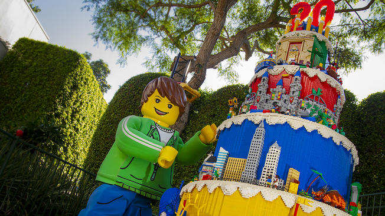

Missä Tanska sijaitsee?
Tanskan kuningaskunta on perustuslaillinen monarkia Pohjois-Euroopassa. Sillä on vain yksi rajanaapuri, maan eteläpuolella sijaitseva Saksa.
Ruotsista Tanskan erottaa vain kapea Juutinrauman salmi.
Pienin pohjoismaa
Tanska on 43 094 neliökilometrin laajuinen, joten se on pinta-alaltaan selvästi pienin Pohjoismaa, jos Grönlantia ei lasketa sen pinta-alaan.
Tanskassa asuu noin viisi ja puoli miljoonaa asukasta ja sen pääkaupunki on Kööpenhamina.
Tiesitkö tämän Tanskasta?
- Pieni Merenneito, Keisarin Uudet Vaatteet ja Ruma Ankanpoikanen ovat tanskalaisen kirjailijan H.C. Andersenin kirjoittamia
- Tanska on yksi maailman vanhimmista monarkioista
- Yksi suosituimmista matkakohteista Tanskassa on Legoland
- Tanskassa sijaitsee Pohjois-Euroopan paras huvipuisto Tivoli
Tanska on Legojen kotimaa
Tanskan parhaimmat makuelämykset
- Smørrebrød eli tanskalainen voileipä
- Viineri
- Hotdog katukioskista
- Tanskalainen olut
- Michelin-ravintoloiden annokset

Lisätietoa
| Varaa matkasi täältä | Matkaoppaita Tanskaan | Muita hyödyllisiä linkkejä |
|---|---|---|
| Matkatoimisto Aurinkomatkat | Tanska-matkaopas | Sää Kööpenhaminassa |
| Matkatoimisto Tjäreborg | Pieniä Tanska-oppaita | Parhaat nähtävyydet |